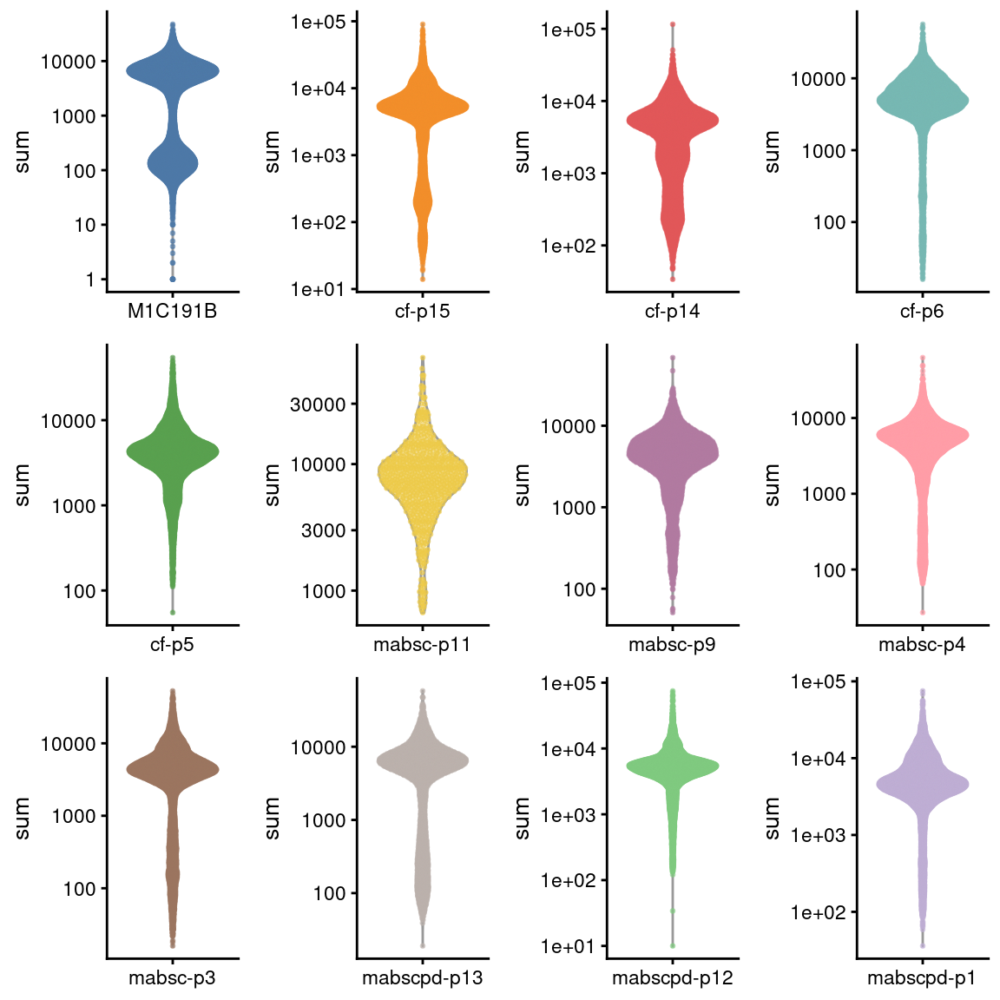
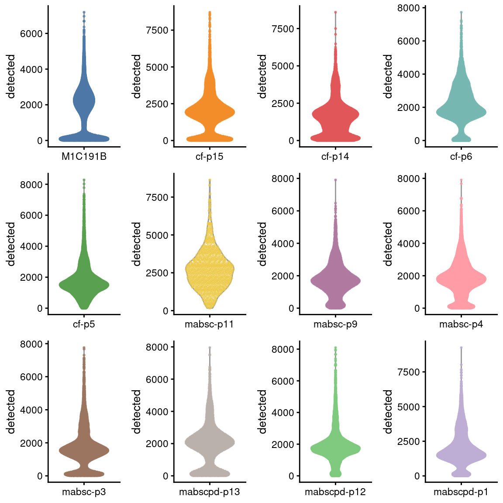
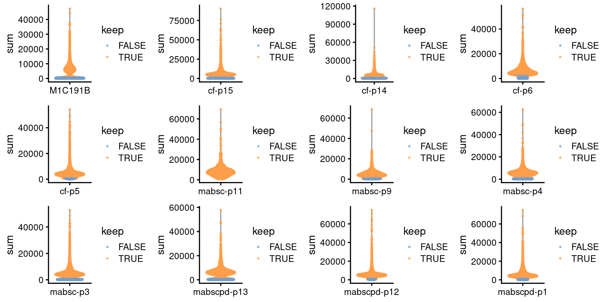
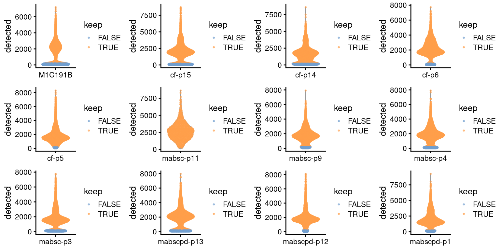
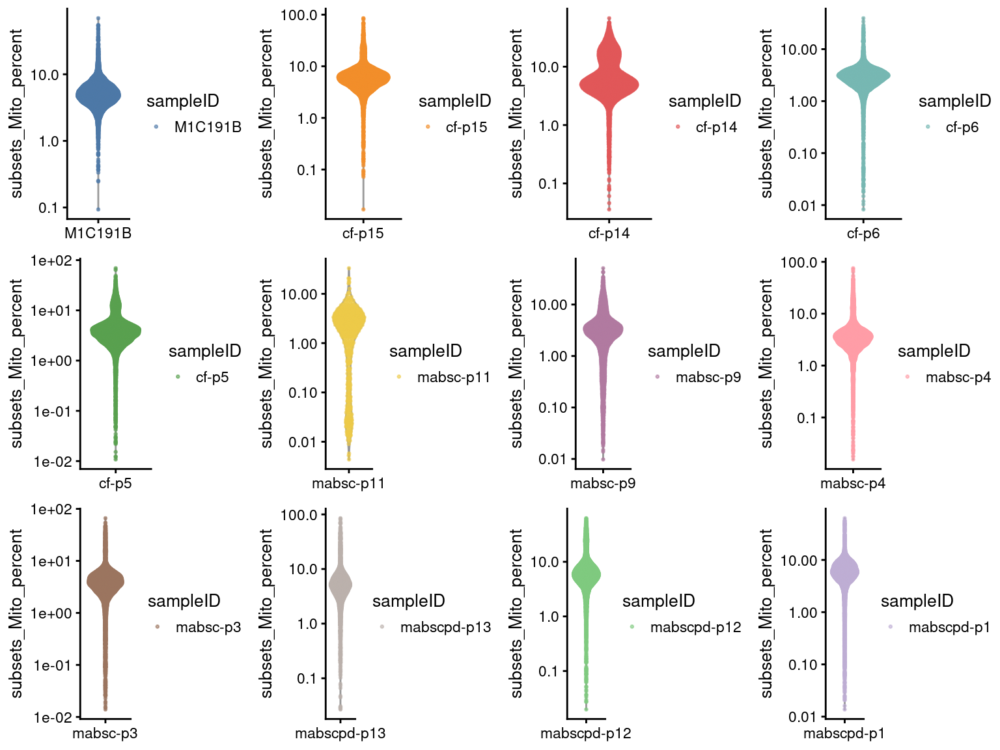
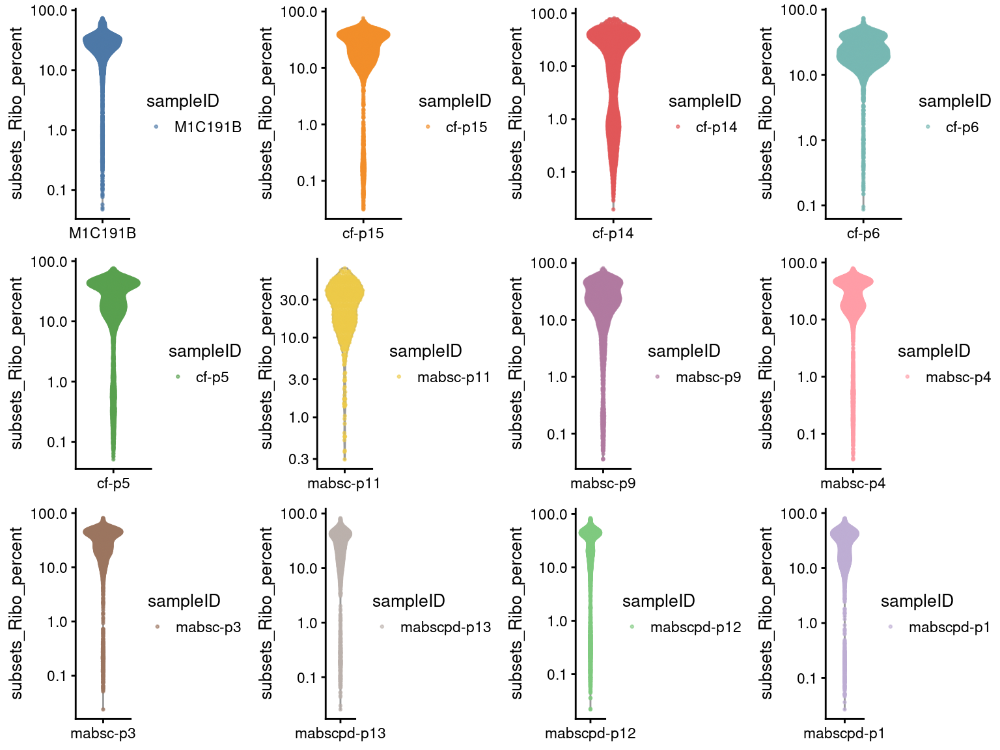
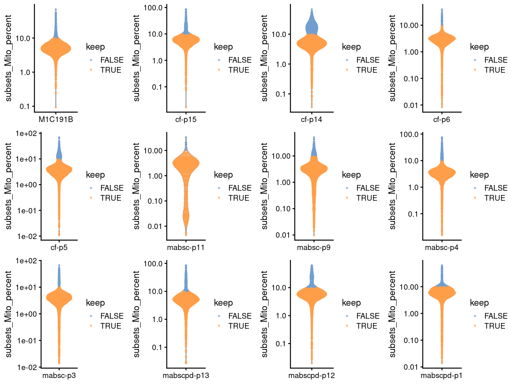
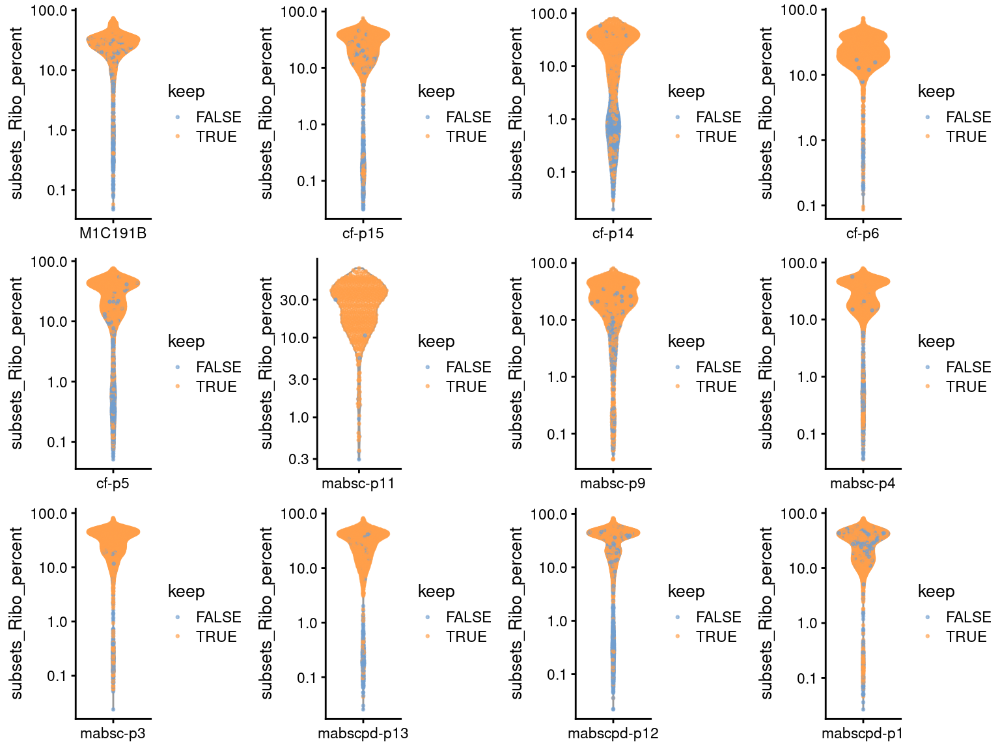
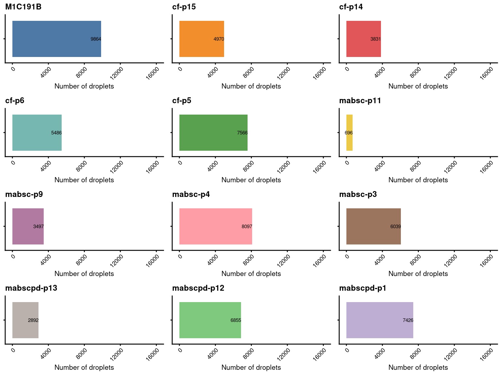

Last updated: 2026-04-23
Checks: 7 0
Knit directory: cf-pbmc-bal-scrna/
This reproducible R Markdown analysis was created with workflowr (version 1.7.0). The Checks tab describes the reproducibility checks that were applied when the results were created. The Past versions tab lists the development history.
Great! Since the R Markdown file has been committed to the Git repository, you know the exact version of the code that produced these results.
Great job! The global environment was empty. Objects defined in the global environment can affect the analysis in your R Markdown file in unknown ways. For reproduciblity it’s best to always run the code in an empty environment.
The command set.seed(20260423) was run prior to running the code in the R Markdown file. Setting a seed ensures that any results that rely on randomness, e.g. subsampling or permutations, are reproducible.
Great job! Recording the operating system, R version, and package versions is critical for reproducibility.
Nice! There were no cached chunks for this analysis, so you can be confident that you successfully produced the results during this run.
Great job! Using relative paths to the files within your workflowr project makes it easier to run your code on other machines.
Great! You are using Git for version control. Tracking code development and connecting the code version to the results is critical for reproducibility.
The results in this page were generated with repository version 16fd552. See the Past versions tab to see a history of the changes made to the R Markdown and HTML files.
Note that you need to be careful to ensure that all relevant files for the analysis have been committed to Git prior to generating the results (you can use wflow_publish or wflow_git_commit). workflowr only checks the R Markdown file, but you know if there are other scripts or data files that it depends on. Below is the status of the Git repository when the results were generated:
Ignored files:
Ignored: .DS_Store
Untracked files:
Untracked: ._.DS_Store
Untracked: data/SCEs
Untracked: data/cellbender
Untracked: data/cytokine
Untracked: data/plots
Untracked: data/sample_sheets
Untracked: data/vireo
Untracked: notebooks/
Note that any generated files, e.g. HTML, png, CSS, etc., are not included in this status report because it is ok for generated content to have uncommitted changes.
These are the previous versions of the repository in which changes were made to the R Markdown (analysis/02.qc_Pcap.Rmd) and HTML (docs/02.qc_Pcap.html) files. If you’ve configured a remote Git repository (see ?wflow_git_remote), click on the hyperlinks in the table below to view the files as they were in that past version.
| File | Version | Author | Date | Message |
|---|---|---|---|---|
| html | e6e327b | tcwong1994 | 2026-04-23 | Build site. |
| Rmd | d3ab1c7 | tcwong1994 | 2026-04-23 | Publish PBMC QC analyses |
knitr::opts_chunk$set(warning = FALSE, message = FALSE)
xaringanExtra::use_panelset()suppressPackageStartupMessages({
library(DropletUtils)
library(here)
library(ggplot2)
library(Seurat)
library(cowplot)
library(patchwork)
library(scater)
library(dplyr)
library(forcats)
library(janitor)
library(stringr)
library(AnnotationHub)
library(ensembldb)
library(msigdbr)
library(Homo.sapiens)
library(qs)
library(xgboost)
library(pROC)
library(scDblFinder)
library(BiocParallel)
library(tibble)
library(future.apply)
library(gridExtra)
})
source(here("code","scds.R"))
set.seed(1990)# sampleID
samples <- c("M1C191B",
"cf-p15","cf-p14","cf-p6","cf-p5",
"mabsc-p11","mabsc-p9","mabsc-p4","mabsc-p3",
"mabscpd-p13","mabscpd-p12","mabscpd-p1"
)
# batch_name
batch_name <- "Pcap"
# Specify capture name
capture_names <- setNames(samples, samples)Ambient RNA and empty droplets were removed by CellBender (see code/cellbender.sh).
captures <- setNames(
here("data",
"cellbender",
capture_names,
paste0(capture_names,".cellbender_filtered.h5")),
capture_names)
# read objects
outLst <- here("data","SCEs","doublet",paste0(batch_name,".qc.sceLst.qs"))
if (!file.exists(outLst)) {
sceLst <- lapply(capture_names, function(cap) {
sce <- read10xCounts(samples = captures[cap], col.names = TRUE)
stopifnot(!anyDuplicated(colnames(sce)))
sce <- splitAltExps(
sce,
rowData(sce)$Type,
"Gene Expression")
# Tidy up colData
sce$Capture <- factor(sce$Sample)
sce$Sample <- NULL
# Number of droplets after CellBender
dim(sce)
# add sampleID
sce$sampleID <- factor(cap)
# change DelayedMatrix to dgCMatrix
assay(sce, "counts") <- as(assay(sce, "counts"), "dgCMatrix")
sce
})
}outLst <- here("data","SCEs","doublet",paste0(batch_name,".qc.sceLst.qs"))
if (!file.exists(outLst)) {
sceLst <- lapply(sceLst, function(sce) {
# read metadata.csv
metadata <- read.csv(here("data",
"sample_sheets",
paste0(levels(sce$Capture),".metadata.csv")))
i <- match(sce$sampleID, metadata$sampleID)
# add patient demographics
colData(sce) <- cbind(
colData(sce),
metadata[i,c("Age","Sex","Condition","Bronchiectasis")]
)
sce
})
pt.list <- lapply(sceLst, function(sce) {
# sex check by the expression of XIST, a female-specific gene.
# this detects certain types of sample-mix-ups.
plotExpression(
sce,
"XIST",
x = "sampleID",
colour_by = "Sex",
exprs_values = "counts",
swap_rownames = "Symbol") +
scale_colour_manual(
values = c(
"Female" = "deeppink3",
"Male" = "deepskyblue"),
name = "Sex") +
theme_cowplot() +
theme(axis.text.x = element_text(angle = 0, vjust = 1, hjust = 1),
axis.title.x = element_blank()) -> p
return(p)
})
do.call("grid.arrange", c(pt.list, ncol=4))
}if (!file.exists(outLst)) {
ah <- AnnotationHub(cache="/group/canc2/anson/.cache/R/AnnotationHub", ask=FALSE)
EnsDb.Hsapiens.v98 <- query(ah, c("EnsDb", "Homo Sapiens", 98))[[1]]
sceLst <- lapply(sceLst, function(sce) {
# make feature names unique
rownames(sce) <- uniquifyFeatureNames(rowData(sce)$ID, rowData(sce)$Symbol)
# prepare ensembl v98 database
ensdb_columns <- setNames(c("GENEBIOTYPE", "SEQNAME"),
paste0("ENSEMBL.",
c("GENEBIOTYPE", "SEQNAME")))
stopifnot(all(ensdb_columns %in% columns(EnsDb.Hsapiens.v98)))
ensdb_df <- DataFrame(
lapply(ensdb_columns, function(column) {
mapIds(
x = EnsDb.Hsapiens.v98,
keys = rowData(sce)$ID,
keytype = "GENEID",
column = column,
multiVals = "first")
}),
row.names = rowData(sce)$ID)
# prepare ncbi database
ncbi_columns <- setNames(c("ALIAS", "ENTREZID", "GENENAME"),
paste0("NCBI.", c("ALIAS", "ENTREZID", "GENENAME")))
stopifnot(all(ncbi_columns %in% columns(Homo.sapiens)))
ncbi_df <- DataFrame(
lapply(ncbi_columns, function(column) {
mapIds(
x = Homo.sapiens,
keys = rowData(sce)$ID,
keytype = "ENSEMBL",
column = column,
multiVals = "CharacterList")
}),
row.names = rowData(sce)$ID)
rowData(sce) <- cbind(rowData(sce), ensdb_df, ncbi_df)
sce
})
}if (!file.exists(outLst)) {
sceLst <- lapply(sceLst, function(sce) {
# prepare gene sets
## mitochondrial gene set
mito_set <- rownames(sce)[which(rowData(sce)$ENSEMBL.SEQNAME == "MT")]
is_mito <- rownames(sce) %in% mito_set
summary(is_mito)
## ribosomal gene set
ribo_set <- grep("^RP(S|L)", rownames(sce), value = TRUE)
c2_sets <- msigdbr(species = "Homo sapiens", category = "C2")
ribo_set <- union(
ribo_set,
c2_sets[c2_sets$gs_name == "KEGG_RIBOSOME", ]$human_gene_symbol)
is_ribo <- rownames(sce) %in% ribo_set
summary(is_ribo)
# calculate QC metrics
sce <- addPerCellQCMetrics(
sce,
subsets = list(Mito = which(is_mito),
Ribo = which(is_ribo)),
use.altexps = NULL)
sce
})
qsave(sceLst, file=outLst, nthreads=16)
} else {
sceLst <- qread(outLst, nthreads=16)
}sample_colours <- setNames(
c(palette.colors(10,"Tableau 10"),palette.colors(length(sceLst)-10,"Accent")),
names(sceLst))
# add sample colours
sceLst <- lapply(sceLst, function(sce) {
cols <- setNames(
c(sample_colours[levels(sce$sampleID)]),levels(sce$sampleID))
# add colour
sce$colours <- S4Vectors::make_zero_col_DFrame(ncol(sce))
sce$colours$sample_colours <- cols[sce$sampleID]
sce
})
# library size
pt.lib <- lapply(sceLst, function(sce) {
p1 <- plotColData(
sce,
"sum",
x = "sampleID",
colour_by = "sampleID",
point_size = 0.5) +
scale_y_log10() +
scale_colour_manual(values = sce$colours$sample_colours, name = "sampleID") +
theme(axis.title.x = element_blank()) + NoLegend()
return(p1)
})
# number of genes detected
pt.ng <- lapply(sceLst, function(sce) {
p2 <- plotColData(
sce,
"detected",
x = "sampleID",
colour_by = "sampleID",
point_size = 0.5) +
scale_colour_manual(values = sce$colours$sample_colours, name = "sampleID") +
theme(axis.title.x = element_blank()) + NoLegend()
return(p2)
})
do.call("grid.arrange", c(pt.lib, ncol=4))
do.call("grid.arrange", c(pt.ng, ncol=4))
sceLst_pre_QC_outlier_removal <- sceLst
sceLst_pre_QC_outlier_removal <- lapply(sceLst_pre_QC_outlier_removal, function(sce){
feature_drop <- sce$detected < 200
keep <- !feature_drop
sce$keep <- keep
sce
})
sceLst <- lapply(sceLst_pre_QC_outlier_removal, function(sce) {
sce <- sce[, sce$keep]
sce
})
# print results
do.call("rbind",lapply(names(sceLst), function(s) {
feature_drop <- sceLst_pre_QC_outlier_removal[[s]]$detected < 200
data.frame(
ByFeature = tapply(
feature_drop,
sceLst_pre_QC_outlier_removal[[s]]$Capture,
sum,
na.rm = TRUE),
Remaining = as.vector(unname(table(sceLst[[s]]$Capture))),
PercRemaining = round(
100 * as.vector(unname(table(sceLst[[s]]$Capture))) /
as.vector(
unname(
table(sceLst_pre_QC_outlier_removal[[s]]$Capture))), 1)) |>
tibble::rownames_to_column("Capture") |>
dplyr::arrange(dplyr::desc(PercRemaining))
})) %>% knitr::kable(caption = "Number of droplets remaining.")| Capture | ByFeature | Remaining | PercRemaining |
|---|---|---|---|
| M1C191B | 6420 | 11141 | 63.4 |
| cf-p15 | 1295 | 5772 | 81.7 |
| cf-p14 | 1056 | 5510 | 83.9 |
| cf-p6 | 465 | 5810 | 92.6 |
| cf-p5 | 202 | 9000 | 97.8 |
| mabsc-p11 | 2 | 711 | 99.7 |
| mabsc-p9 | 240 | 3881 | 94.2 |
| mabsc-p4 | 858 | 9032 | 91.3 |
| mabsc-p3 | 1130 | 6614 | 85.4 |
| mabscpd-p13 | 704 | 3242 | 82.2 |
| mabscpd-p12 | 337 | 8492 | 96.2 |
| mabscpd-p1 | 609 | 8761 | 93.5 |
# library size
pt.lib <- lapply(sceLst_pre_QC_outlier_removal, function(sce) {
p1 <- plotColData(
sce,
"sum",
x = "sampleID",
colour_by = "keep",
point_size = 0.5) +
theme(axis.title.x = element_blank())
return(p1)
})
# number of genes detected
pt.ng <- lapply(sceLst_pre_QC_outlier_removal, function(sce) {
p2 <- plotColData(
sce,
"detected",
x = "sampleID",
colour_by = "keep",
point_size = 0.5) +
theme(axis.title.x = element_blank())
return(p2)
})
do.call("grid.arrange", c(pt.lib, ncol=4))
do.call("grid.arrange", c(pt.ng, ncol=4))
outLst <- here("data","SCEs","doublet",paste0(batch_name,".qc.rmDbl.sceLst.qs"))
if (!file.exists(outLst)) {
out <- here("data","SCEs","doublet",paste0(batch_name,".doublets.SCE.qs"))
if(!file.exists(out)){
sceLst_pre_QC_outlier_removal <- lapply(sceLst, function(sce){
# scds
sce1 <- bcds(sce, retRes = TRUE, estNdbl = TRUE)
sce1 <- cxds(sce1, retRes = TRUE, estNdbl = TRUE)
sce1 <- cxds_bcds_hybrid(sce1, estNdbl = TRUE)
# scDblFInder
set.seed(1990)
bp <- MulticoreParam(16, RNGseed=1990)
sce1 <- scDblFinder(sce1, dbr = ncol(sce1)/1000*0.008, BPPARAM=bp)
sce1
})
lapply(sceLst_pre_QC_outlier_removal, function(s){
colData(s) %>%
data.frame %>%
rownames_to_column(var = "cell")
}) %>%
bind_rows() %>%
qsave(file = out, nthreads=16)
qsave(sceLst_pre_QC_outlier_removal, file=outLst, nthreads=16)
}
} else {
sceLst_pre_QC_outlier_removal <- qread(outLst, nthreads=16)
}sceLst <- lapply(sceLst_pre_QC_outlier_removal, function(sce){
sce <- sce[, !(sce$hybrid_call & sce$scDblFinder.class == "doublet")]
})
# n doublet
do.call("rbind",lapply(sceLst_pre_QC_outlier_removal, function(sce) {
table(sce$Capture, sce$hybrid_call & sce$scDblFinder.class == "doublet")
})) -> tab
tab %>%
knitr::kable(caption = "n doublet called by both scds and scDblFinder")| FALSE | TRUE | |
|---|---|---|
| M1C191B | 10326 | 815 |
| cf-p15 | 5520 | 252 |
| cf-p14 | 5273 | 237 |
| cf-p6 | 5545 | 265 |
| cf-p5 | 8357 | 643 |
| mabsc-p11 | 705 | 6 |
| mabsc-p9 | 3745 | 136 |
| mabsc-p4 | 8514 | 518 |
| mabsc-p3 | 6250 | 364 |
| mabscpd-p13 | 3142 | 100 |
| mabscpd-p12 | 7872 | 620 |
| mabscpd-p1 | 8143 | 618 |
# % doublet
data.frame(pct=round(tab[,2]/(tab[,1]+tab[,2])*100,
digits=3)) %>%
knitr::kable(caption = "% doublet called by both scds and scDblFinder")| pct | |
|---|---|
| M1C191B | 7.315 |
| cf-p15 | 4.366 |
| cf-p14 | 4.301 |
| cf-p6 | 4.561 |
| cf-p5 | 7.144 |
| mabsc-p11 | 0.844 |
| mabsc-p9 | 3.504 |
| mabsc-p4 | 5.735 |
| mabsc-p3 | 5.503 |
| mabscpd-p13 | 3.085 |
| mabscpd-p12 | 7.301 |
| mabscpd-p1 | 7.054 |
# subsets_Mito_percent
pt.mito <- lapply(sceLst, function(sce) {
p1 <- plotColData(
sce,
"subsets_Mito_percent",
x = "sampleID",
colour_by = "sampleID",
point_size = 0.5) +
scale_y_log10() +
scale_colour_manual(values = sce$colours$sample_colours, name = "sampleID") +
theme(axis.title.x = element_blank())
return(p1)
})
# number of genes detected
pt.ribo <- lapply(sceLst, function(sce) {
p2 <- plotColData(
sce,
"subsets_Ribo_percent",
x = "sampleID",
colour_by = "sampleID",
point_size = 0.5) +
scale_y_log10() +
scale_colour_manual(values = sce$colours$sample_colours, name = "sampleID") +
theme(axis.title.x = element_blank())
return(p2)
})
suppressWarnings(do.call("grid.arrange", c(pt.mito, ncol=4)))
suppressWarnings(do.call("grid.arrange", c(pt.ribo, ncol=4)))
sceLst_pre_QC_outlier_removal <- sceLst
sceLst_pre_QC_outlier_removal <- lapply(sceLst_pre_QC_outlier_removal, function(sce){
mito_drop <- sce$subsets_Mito_percent > 10
keep <- !mito_drop
sce$keep <- keep
sce
})
sceLst <- lapply(sceLst_pre_QC_outlier_removal, function(sce) {
sce <- sce[, sce$keep]
sce
})
# print results
do.call("rbind",lapply(names(sceLst), function(s) {
mito_drop <- sceLst_pre_QC_outlier_removal[[s]]$subsets_Mito_percent > 10
data.frame(
ByMito = tapply(
mito_drop,
sceLst_pre_QC_outlier_removal[[s]]$Capture,
sum,
na.rm = TRUE),
Remaining = as.vector(unname(table(sceLst[[s]]$Capture))),
PercRemaining = round(
100 * as.vector(unname(table(sceLst[[s]]$Capture))) /
as.vector(
unname(
table(sceLst_pre_QC_outlier_removal[[s]]$Capture))), 1)) |>
tibble::rownames_to_column("Capture") |>
dplyr::arrange(dplyr::desc(PercRemaining))
})) %>% knitr::kable(caption = "Number of droplets remaining.")| Capture | ByMito | Remaining | PercRemaining |
|---|---|---|---|
| M1C191B | 462 | 9864 | 95.5 |
| cf-p15 | 550 | 4970 | 90.0 |
| cf-p14 | 1442 | 3831 | 72.7 |
| cf-p6 | 59 | 5486 | 98.9 |
| cf-p5 | 791 | 7566 | 90.5 |
| mabsc-p11 | 9 | 696 | 98.7 |
| mabsc-p9 | 248 | 3497 | 93.4 |
| mabsc-p4 | 417 | 8097 | 95.1 |
| mabsc-p3 | 211 | 6039 | 96.6 |
| mabscpd-p13 | 250 | 2892 | 92.0 |
| mabscpd-p12 | 1017 | 6855 | 87.1 |
| mabscpd-p1 | 717 | 7426 | 91.2 |
# subsets_Mito_percent
pt.mito <- lapply(sceLst_pre_QC_outlier_removal, function(sce) {
p1 <- plotColData(
sce,
"subsets_Mito_percent",
x = "sampleID",
colour_by = "keep",
point_size = 0.5) +
scale_y_log10() +
theme(axis.title.x = element_blank())
return(p1)
})
# number of genes detected
pt.ribo <- lapply(sceLst_pre_QC_outlier_removal, function(sce) {
p2 <- plotColData(
sce,
"subsets_Ribo_percent",
x = "sampleID",
colour_by = "keep",
point_size = 0.5) +
scale_y_log10() +
theme(axis.title.x = element_blank())
return(p2)
})
suppressWarnings(do.call("grid.arrange", c(pt.mito, ncol=4)))
| Version | Author | Date |
|---|---|---|
| e6e327b | tcwong1994 | 2026-04-23 |
suppressWarnings(do.call("grid.arrange", c(pt.ribo, ncol=4)))
| Version | Author | Date |
|---|---|---|
| e6e327b | tcwong1994 | 2026-04-23 |
pt.n <- lapply(sceLst, function(sce) {
# number of droplets assigned by HTO method
p1 <- ggcells(sce) +
geom_bar(aes(x = sampleID, fill = sampleID)) +
geom_text(stat='count', aes(x = sampleID, label=..count..), hjust=1, size=2) +
coord_flip() +
ggtitle(levels(sce$Capture)) +
ylab("Number of droplets") +
theme_cowplot(font_size = 8) +
scale_y_continuous(breaks=seq(0,16000,4000),limits=c(0,16000)) +
scale_fill_manual(values = sce$colours$sample_colours) +
theme(axis.title.y = element_blank(),
axis.text.y = element_blank(),
axis.text.x = element_text(angle = 45, vjust = 1, hjust = 1)) +
guides(fill=guide_legend(title="sampleID")) + NoLegend()
return(p1)
})
suppressWarnings(do.call("grid.arrange", c(pt.n, ncol=3)))
| Version | Author | Date |
|---|---|---|
| e6e327b | tcwong1994 | 2026-04-23 |
prep_dir <- here("data","SCEs","preprocessed")
if(!dir.exists(prep_dir)) {
dir.create(prep_dir, recursive = TRUE)
}
out <- here("data","SCEs","preprocessed",paste0(batch_name,".preprocessed.sceLst.qs"))
if(!file.exists(out)) {
qsave(sceLst, out, nthreads=16)
}
sessionInfo()R version 4.1.2 (2021-11-01)
Platform: x86_64-pc-linux-gnu (64-bit)
Running under: CentOS Linux 7 (Core)
Matrix products: default
BLAS: /hpc/software/installed/R/4.1.2/lib64/R/lib/libRblas.so
LAPACK: /hpc/software/installed/R/4.1.2/lib64/R/lib/libRlapack.so
locale:
[1] LC_CTYPE=en_US.UTF-8 LC_NUMERIC=C
[3] LC_TIME=en_US.UTF-8 LC_COLLATE=en_US.UTF-8
[5] LC_MONETARY=en_US.UTF-8 LC_MESSAGES=en_US.UTF-8
[7] LC_PAPER=en_US.UTF-8 LC_NAME=C
[9] LC_ADDRESS=C LC_TELEPHONE=C
[11] LC_MEASUREMENT=en_US.UTF-8 LC_IDENTIFICATION=C
attached base packages:
[1] stats4 stats graphics grDevices utils datasets methods
[8] base
other attached packages:
[1] gridExtra_2.3
[2] future.apply_1.11.2
[3] future_1.33.2
[4] tibble_3.2.1
[5] BiocParallel_1.28.3
[6] scDblFinder_1.8.0
[7] pROC_1.18.0
[8] xgboost_1.7.9.1
[9] qs_0.27.2
[10] Homo.sapiens_1.3.1
[11] TxDb.Hsapiens.UCSC.hg19.knownGene_3.2.2
[12] org.Hs.eg.db_3.14.0
[13] GO.db_3.14.0
[14] OrganismDbi_1.36.0
[15] msigdbr_7.5.1
[16] ensembldb_2.18.4
[17] AnnotationFilter_1.22.0
[18] GenomicFeatures_1.46.4
[19] AnnotationDbi_1.56.2
[20] AnnotationHub_3.2.2
[21] BiocFileCache_2.6.1
[22] dbplyr_2.1.1
[23] stringr_1.5.1
[24] janitor_2.1.0
[25] forcats_1.0.1
[26] dplyr_1.1.4
[27] scater_1.22.0
[28] scuttle_1.4.0
[29] patchwork_1.2.0
[30] cowplot_1.1.3
[31] SeuratObject_5.0.1
[32] Seurat_4.4.0
[33] ggplot2_3.5.2
[34] here_1.0.1
[35] DropletUtils_1.14.2
[36] SingleCellExperiment_1.16.0
[37] SummarizedExperiment_1.24.0
[38] Biobase_2.54.0
[39] GenomicRanges_1.46.1
[40] GenomeInfoDb_1.30.1
[41] IRanges_2.28.0
[42] S4Vectors_0.32.4
[43] BiocGenerics_0.40.0
[44] MatrixGenerics_1.6.0
[45] matrixStats_1.1.0
[46] workflowr_1.7.0
loaded via a namespace (and not attached):
[1] rappdirs_0.3.3 rtracklayer_1.54.0
[3] scattermore_1.2 R.methodsS3_1.8.1
[5] tidyr_1.3.1 bit64_4.6.0-1
[7] knitr_1.46 irlba_2.3.5.1
[9] DelayedArray_0.20.0 R.utils_2.12.2
[11] data.table_1.15.4 KEGGREST_1.34.0
[13] RCurl_1.98-1.9 generics_0.1.3
[15] ScaledMatrix_1.2.0 callr_3.7.3
[17] RSQLite_2.3.6 RApiSerialize_0.1.4
[19] RANN_2.6.1 bit_4.0.5
[21] spatstat.data_3.0-4 xml2_1.3.3
[23] lubridate_1.8.0 httpuv_1.6.15
[25] assertthat_0.2.1 viridis_0.6.2
[27] xfun_0.43 hms_1.1.4
[29] jquerylib_0.1.4 babelgene_22.9
[31] evaluate_0.23 promises_1.3.0
[33] restfulr_0.0.15 fansi_1.0.6
[35] progress_1.2.3 igraph_2.0.3
[37] DBI_1.2.2 htmlwidgets_1.6.4
[39] spatstat.geom_3.2-9 purrr_1.2.1
[41] RcppParallel_5.1.10 biomaRt_2.50.3
[43] deldir_2.0-4 sparseMatrixStats_1.6.0
[45] vctrs_0.6.5 ROCR_1.0-11
[47] abind_1.4-8 cachem_1.0.8
[49] withr_3.0.0 progressr_0.14.0
[51] sctransform_0.4.1 GenomicAlignments_1.30.0
[53] scran_1.22.1 prettyunits_1.2.0
[55] xaringanExtra_0.7.0 goftest_1.2-3
[57] cluster_2.1.8.1 dotCall64_1.1-1
[59] lazyeval_0.2.2 crayon_1.5.2
[61] spatstat.explore_3.2-7 labeling_0.4.3
[63] edgeR_4.4.2 pkgconfig_2.0.3
[65] ProtGenerics_1.30.0 nlme_3.1-155
[67] vipor_0.4.5 rlang_1.1.3
[69] globals_0.16.3 lifecycle_1.0.4
[71] miniUI_0.1.1.1 filelock_1.0.3
[73] rsvd_1.0.5 rprojroot_2.1.1
[75] polyclip_1.10-6 lmtest_0.9-40
[77] graph_1.72.0 Matrix_1.6-5
[79] Rhdf5lib_1.16.0 zoo_1.8-12
[81] beeswarm_0.4.0 whisker_0.4
[83] ggridges_0.5.6 processx_3.8.0
[85] stringfish_0.16.0 rjson_0.2.21
[87] png_0.1-8 viridisLite_0.4.2
[89] bitops_1.0-9 getPass_0.2-2
[91] R.oo_1.24.0 KernSmooth_2.23-20
[93] spam_2.10-0 rhdf5filters_1.6.0
[95] Biostrings_2.62.0 blob_1.2.4
[97] DelayedMatrixStats_1.16.0 parallelly_1.37.1
[99] spatstat.random_3.2-3 beachmat_2.10.0
[101] scales_1.3.0 memoise_2.0.1
[103] magrittr_2.0.3 plyr_1.8.9
[105] ica_1.0-3 zlibbioc_1.48.2
[107] compiler_4.1.2 BiocIO_1.8.0
[109] dqrng_0.3.2 RColorBrewer_1.1-3
[111] fitdistrplus_1.1-11 Rsamtools_2.10.0
[113] snakecase_0.11.0 cli_3.6.2
[115] XVector_0.34.0 listenv_0.9.1
[117] pbapply_1.7-2 ps_1.7.2
[119] MASS_7.3-55 tidyselect_1.2.1
[121] stringi_1.8.3 highr_0.10
[123] yaml_2.3.8 BiocSingular_1.10.0
[125] locfit_1.5-9.4 ggrepel_0.9.1
[127] grid_4.1.2 sass_0.4.9
[129] tools_4.1.2 parallel_4.1.2
[131] rstudioapi_0.13 bluster_1.4.0
[133] git2r_0.31.0 metapod_1.2.0
[135] farver_2.1.1 Rtsne_0.17
[137] digest_0.6.35 BiocManager_1.30.25
[139] shiny_1.8.1.1 Rcpp_1.0.12
[141] BiocVersion_3.18.1 later_1.3.2
[143] RcppAnnoy_0.0.22 httr_1.4.7
[145] colorspace_2.1-0 XML_3.99-0.16.1
[147] fs_1.6.4 tensor_1.5.1
[149] reticulate_1.36.1.9000 splines_4.1.2
[151] RBGL_1.70.0 uwot_0.1.14
[153] statmod_1.5.0 spatstat.utils_3.1-3
[155] sp_2.1-3 plotly_4.10.4.9000
[157] xtable_1.8-4 jsonlite_1.8.8
[159] R6_2.6.1 pillar_1.9.0
[161] htmltools_0.5.8.1 mime_0.12
[163] glue_1.7.0 fastmap_1.1.1
[165] BiocNeighbors_1.12.0 interactiveDisplayBase_1.32.0
[167] codetools_0.2-20 utf8_1.2.4
[169] lattice_0.22-7 bslib_0.3.1
[171] spatstat.sparse_3.0-3 curl_5.2.1
[173] ggbeeswarm_0.6.0 leiden_0.4.3.1
[175] survival_3.2-13 limma_3.62.2
[177] rmarkdown_2.26 munsell_0.5.1
[179] rhdf5_2.38.1 GenomeInfoDbData_1.2.11
[181] HDF5Array_1.22.1 reshape2_1.4.4
[183] gtable_0.3.5